The feel
The NES look is flat colour cut into blocks. Backgrounds are pieced together from 8 by 8 tiles,1 and each 16 by 16 block shares one palette of three colours plus a backdrop colour, which is what gives NES games their blocky appearance.2 The colours are few, 54 in all, yet Yacht Club Games kept to them for Shovel Knight because they give a very distinctive look.3 On Super Mario Bros., Toshihiko Nakago knew the game had become something amazing when its background went from black to a blue sky.4
It is a look made from limits, and the people who set it enjoyed them.4 Takashi Tezuka, who joined Nintendo as an artist, would ask what the conditions were and have fun working within them, and Nakago remembers how "we poured our strength into figuring out how to use a little data to represent a lot".4 For Keiji Inafune, the hardware demanded pixel graphics that were as simple as possible but refined to the maximum, and without that restriction the design would not carry the same air.5
- bright
- blocky
- clear
- thrifty
- palette-swapped
- cool-toned
Where it comes from
Nintendo released the Famicom in Japan on 15 July 1983 and the NES in America on 18 October 1985,1 and the Computer History Museum credits its picture processing unit, developed by Ricoh, with unprecedented graphics.6 For Super Mario Bros. (1985),7 Shigeru Miyamoto wanted what his arcade Mario Bros. lacked: scrolling, a bright background instead of black, and bigger characters.8 At Capcom, Keiji Inafune says Mega Man 2 and its eight bosses set the series' style.9 The look came back in Capcom's own Mega Man 9 (2008),5 in Yacht Club's Shovel Knight (2014), "a rose-tinted view of an 8-bit game",3 and in UFO 50 (2024), fifty games presented as the long-lost work of a fictional developer of the 1980s and 1990s.10
Core elements
One fixed palette
Every colour comes from a master palette of 64 entries built into the console,1 which gives 54 different colours.3 It has few warm shades, so NES games lean on greens and blues,11 and Mega Man's team made him blue because the palette held more blues than any other colour, so they could draw him in more detail.12
One palette per 16 by 16 block
The background has four palettes, each of three colours plus a backdrop colour that all four share.2 Each 16 by 16 block can use only one of them.1 Skilled artists hide the grid by sharing colours across block edges, as the opening of Castlevania does with its reds and its black background.2
Reused 8 by 8 tiles
Everything is drawn in 8 by 8 tiles.1 A pattern table holds 256 of them,1 while a screen has 960 places to fill, so most tiles repeat.2 Super Mario Bros. builds its greenery and clouds from the same parts in different colours, and its small starting castle is the top of the big one at the goal.4
Sprites in three colours
Sprites are 8 by 8, or 8 by 16 in a second mode, with three colours plus transparency from four palettes of their own.13,3 Characters are built from several: Mega Man takes ten sprites,13 with a second layer for his face in beige, white and black over a body in blue, light blue and black.3
Eight-sprite scanline limit
The console draws up to 64 sprites, but only eight on any one scanline.1 Any more on that line simply aren't drawn, so games rotate which sprites get drawn each frame, and that is where NES flicker comes from.13 Developers drew very large enemies as background tiles instead, which is why they usually fight you on a black screen with no background art.3
Pixel-first character design
Mario's look came from how few pixels he had: a cap because his hair couldn't be shown, a big nose and moustache to hide his mouth, and overalls.7 Satoru Iwata calls the whole design functional, down to making it easy to tell which way he faces.7 Keiji Inafune's team drew Mega Man's robots as pixel graphics first and designed the details from them, because detailed drawings didn't convert well to NES pixels.9
How to do it
Set up the canvas and grid
Work at 256 by 240, the NES's native resolution; most emulators show 256 by 224 of it.11 Lay a 16 by 16 pixel grid over it for the palette blocks.11 Each block holds four 8 by 8 tiles.1 Scale the picture up by whole numbers only, so every pixel stays the same size.14
Set up eight palettes first
Set up eight palettes of four colours: four for backgrounds and four for sprites.11 The first colour is shared by all four background palettes, usually black or the main colour of the scene, and is transparent in the sprite palettes.11 Take every colour from the master palette.1 Shovel Knight added just four colours of its own, such as #22123B, a dark purple that bridges black and the cool colours.3
Paint backgrounds block by block
Give each 16 by 16 block one background palette,1 and let neighbouring palettes share a colour so the grid doesn't show: in Almost Hero the street and its highlights share their brightest colour.11 Stay within 256 unique tiles, counting the HUD and text, which usually sit in the background too, and add small reusable details such as cracks and crates so the repeats don't look bland.11 Count the unique tiles as you go: cut the image into 8 by 8 tiles and identify the repeats.11
Build sprites from 8 by 8 pieces
Draw each sprite tile in three colours plus transparency, and layer a second sprite on top where you need more.3 Use the 8 by 16 mode for tall characters.13 Draw with the pencil, anti-alias by hand, and set interpolation to none (nearest neighbour) for any resize or rotation.11 Then simplify: Yacht Club's first King Knight kept to their five-colour limit but was too detailed and felt almost like a 16-bit sprite, so they took a few passes to simplify the shapes.3
Budget eight sprites per line
Count sprites along each row of the screen. Almost Hero's characters are three sprites wide, so two enemies and a weapon on one line go over the limit.11 Then choose between letting the extras flicker and keeping the screen clear, as Shovel Knight does with few objects on screen and limited particles.3 Without the hardware limit, Shovel Knight draws a huge boss as one sprite, but still on a black or very dark background.3
Animate with palettes and few frames
Change palettes instead of redrawing: Mega Man changes colour with every weapon,12 and Shovel Knight uses palette swaps for enemy variants and palette cycling for damage and explosions.3 In a modern engine, pass the sprite to a pixel shader as an indexed byte texture, with the palette as a 32-bit colour texture.3 Keep animations short: UFO 50 holds them to around four frames.15
Write for five channels
Compose for two pulse channels, a triangle, a noise channel and a sample channel.1 Most games give one pulse the melody and the other the accompaniment, use the triangle for bass and the noise for percussion.1
Cheat sheet
Do
- Put sprites in static places such as the HUD when a screen needs a little extra colour: in Almost Hero, the item in the reserve slot is a sprite.11
- Draw characters in pixels first and design the details from the sprite.9
- Agree the limits before several artists start. On UFO 50, Derek Yu thinks the shared rules for resolution, palette and colour were the main thing that held the team's separate work together.10
- Try your palette on other games. Eirik Suhrke converted 8-bit and 16-bit screenshots to UFO 50's colours to find its strengths and gaps.10
Avoid
- Too much detail. Inafune sent Mega Man 9's art back again and again to make the characters simpler.5
- Ignoring the attribute grid. Mega Cat Studios call the 16 by 16 palette rule one of the biggest hurdles between 8-bit style pixel art and true 8-bit art.11
- Automatic anti-aliasing, interpolated resizing and fractional scaling, which blur the pixels or make them uneven.11,14
- Flicker and slowdown kept as nostalgia. Yacht Club found flicker detrimental and removed it,3 and UFO 50's team left out flicker and slowdown, which on a modern PC would add little beyond artificial mimicry.15
- Reverb and stereo mixing on the music. Shovel Knight's team avoided both because they would destroy the raw character of the sounds.3
Tools and tutorials
- NEXXT
An NES graphics studio that emulates the console's picture rules, so whatever you draw will display on an NES, continuing Shiru's NES Screen Tool.16
- Creating NES Graphics
Mega Cat Studios build an NES background for Almost Hero, from palettes and grids to the tile count.11
- NES Graphics, Part 1
Dustin Long takes Castlevania's opening screen apart into tiles, nametable, palettes and attributes.2
- Pyxel Edit
Counts your unique tiles: set the tile size to 8 and press Identify Tiles.11
- Lospec: Nintendo Entertainment System palette
The NES colours as hex values. Emulators disagree on them, so pick one set and keep to it.1
- FamiStudio
A simple music editor for the NES and Famicom, for chiptune artists and homebrew developers.17
- NESdev Wiki
Hardware reference on palettes, attribute tables, sprites and sound. Dustin Long learned most of his NES programming, graphics above all, from it and Nintendo Age's Nerdy Nights.2
- Godot: Multiple resolutions
Set a base window size, the viewport stretch mode and integer scaling so pixel art scales evenly.14
Palette
Each colour is sampled pixel for pixel from the screenshots on this page. NES hex values differ from one emulator to the next, because the console makes its colours directly as a TV signal, with no exact RGB equivalent.1
Feel the vibe
Listen
Bouncy and syncopated over a restless bass line. Put it on while you build your first tileset.
YouTubeA heroic march for exploring. Listen to how much space a handful of voices can fill.
YouTubeFast, driving and melodic: the action end of the style, for boss approaches and chases.
YouTubeWritten for the NES chip plus Konami's VRC6, which adds three channels.3 Play it after the 1980s tracks and listen for the extra voices.
YouTubeThe same bleeps as indie pop, for when you want the sound without a game around it.
YouTube
More references
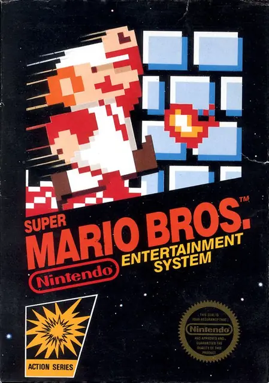
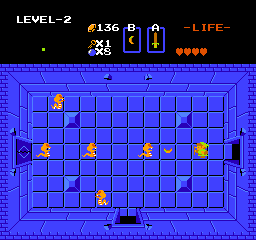
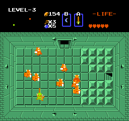
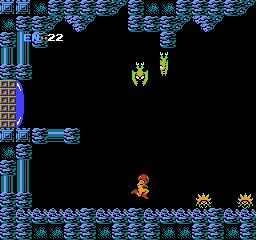
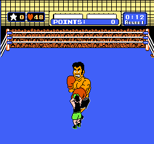
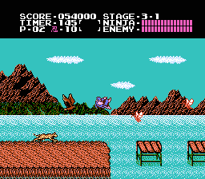
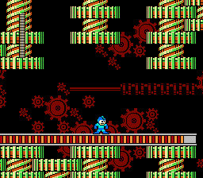
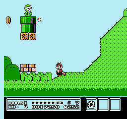
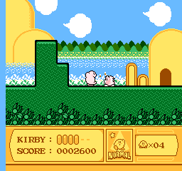
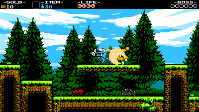
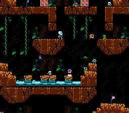
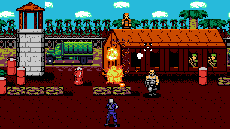
Games
- Super Mario Bros.
Study the clouds and bushes: the same parts in different colours.4
- The Legend of Zelda
Study its sprites, three colours plus transparency each.3
- Metroid
Study how black backgrounds and a few strong colours carry its caves and shafts.
- Mega Man 2
Study the Mecha Dragon in Wily's castle: on the NES a boss that big was usually drawn as background tiles, on a black screen.3
- Super Mario Bros. 3
Its MMC3 cartridge chip is a big part of why it looks so much better than the first game.1 Watch the right edge of the screen when it scrolls diagonally, where the colours go wrong.1
- Kirby's Adventure
Its cartridge held 6 megabits.3 Study how far its colour and animation go.
- Mega Man 9
Capcom's own return to 8-bit, which Inafune said would be much closer to Mega Man 2.5 Compare the two.
- Shovel Knight
An NES game as remembered: 400 by 240, 16 by 16 tiles and only a few colours the NES lacked.3 Jake Kaufman wrote its score in FamiTracker, which exports NES machine code.3
- UFO 50
Fifty games for an invented 8-bit console, on one 32-colour palette with four colours to a sprite.15
Film, art and more
- Nintendo Entertainment System
The console itself. It reached America in 1985 with 18 games, a number that soon passed 100.6
- Super Mario Bros. planning sheet
Miyamoto's sheet, signed 28 February 1985, has a palette in its upper right corner, which he used to manage tricks such as making the greenery and clouds out of the same parts.4
- I Am Error
Nathan Altice's book on the Famicom and NES as a platform, from code to silicon, including Super Mario Bros. and what its sound chip meant for chiptune.18
- Konami VRC6
A Famicom cartridge chip with two more pulse waves and a sawtooth, used by the Japanese release of Castlevania III.1
- Chiptune
Music made with old sound chips. Anamanaguchi, who made Airbrushed, came out of the New York chiptune scene, and Peter Berkman wrote his tracks for the Scott Pilgrim game with an NES.19
Sources
- 1NES / Famicom Architecture: A Practical Analysis
- 2NES Graphics, Part 1
- 3Breaking the NES for Shovel Knight
- 4Iwata Asks: Super Mario Bros. 25th Anniversary, Original Super Mario Developers: Designing Levels Together
- 5Mega Man 9: exclusive interview with the mind behind the machines
- 6Nintendo Ups the Ante
- 7Iwata Asks: Super Mario Bros. 25th Anniversary, NES & Mario: A Game You Can Play 50 or 100 Years Later
- 8Iwata Asks: Super Mario Bros. 25th Anniversary, Original Super Mario Developers: The Grand Culmination
- 9Mega Man 9: exclusive interview with the mind behind the machines (page 2)
- 10Creating dozens of unique pixel worlds for UFO 50
- 11Creating NES Graphics
- 12The Story Of Mega Man And Why Keiji Inafune Made Him Blue
- 13NES Graphics, Part 2
- 14Multiple resolutions
- 15Making modern games with retro constraints
- 16NEXXT
- 17FamiStudio NES Music Editor
- 18I Am Error: The Nintendo Family Computer / Entertainment System Platform
- 19Interview: Anamanaguchi's Guide to Scott Pilgrim: The Game's Soundtrack